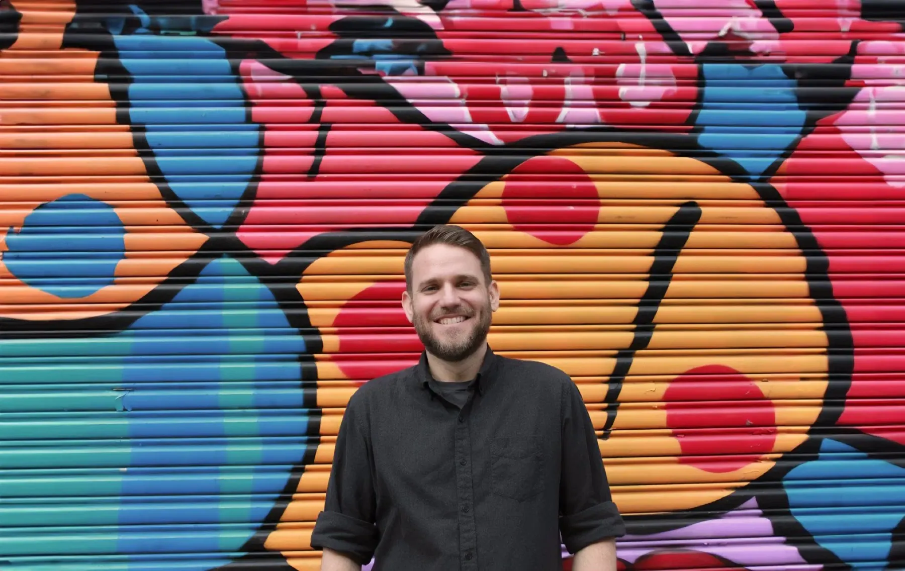
A product designer and pixel whisperer with more than a decade of professional experience.
I’ve spent a good chunk of my career designing apps for medium to large B2B companies, as well as several startups.
Outside of product design, I do 3D rendering, 3D printing, woodworking, metalworking, fermentation, bread, music making, and record collecting. The list goes on.
Work history
-
Glassett Consulting
Founder & Principal Designer
2023 — Now- Strategic problem solver for early-stage startups, non-profits, and enterprise clients.
- Led customer research for Walmart and Lego, resulting in a 3% e-commerce conversion increase and a 25% boost in user engagement in 8 weeks.
- Create and maintain design systems that drive consistency and reduce development time.
-
Alteryx
Senior Product Designer · Remote
2022 — 2023- Led design for digital experiences that met business objectives and increased engagement, driving a 5-point NPS increase in 3 months.
- Collaborated with product and engineering on the design system to create a more extensible brand and product.
- Facilitated design sprints and brainstorms for a cloud admin console, driving cross-functional collaboration.
-
Sony Music Entertainment
Senior Product Designer · Remote
2019 — 2022- Directed the modernization of a core metadata platform, reducing errors by 30% over 6 months in a complex data environment.
- Design lead on an agile team: prioritized work, advocated for user needs, created onboarding flows, and built scalable solutions.
- Facilitated design sprints focused on user-centered design, cross-functional alignment, and design standards.
-
Handy (Angi)
Senior Product Designer · NYC
2018 — 2019- Led the creation and evolution of an enterprise-level design system, resulting in a 15% productivity gain.
- Mentored and managed product and visual designers, fostering collaboration across product, engineering, and growth.
-
Vimeo
Senior Product Designer · NYC
2017 — 2018- Designed cross-platform experiences (web, mobile, TV) for a global content platform, using data-driven design to drive a 3% increase in mobile conversions.
- Conducted user research, wireframing, and rapid prototyping with a cross-functional team.
-
The Orchard / Sony Music
Senior Product Designer · NYC
2015 — 2017- Developed high-fidelity prototypes and specifications for complex enterprise applications, including analytics and accounting platforms.
- Conducted user research (interviews, workshops, usability studies) to inform design and influence product strategy.
-
Vice / Carrot Creative
UX Designer · Brooklyn
2013 — 2015- Designed interfaces, mockups, customer experience maps, and annotated wireframes for large-scale websites and apps.
- Led design for The Nature Conservancy project, which raised $2.1M in donations.
Things I make
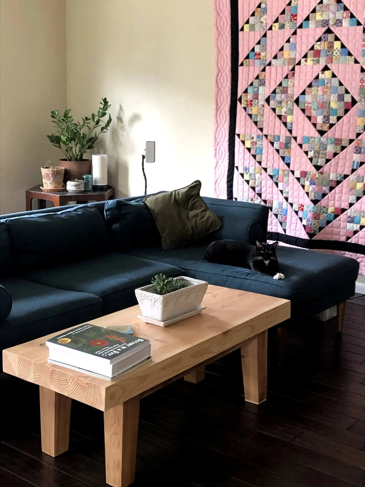
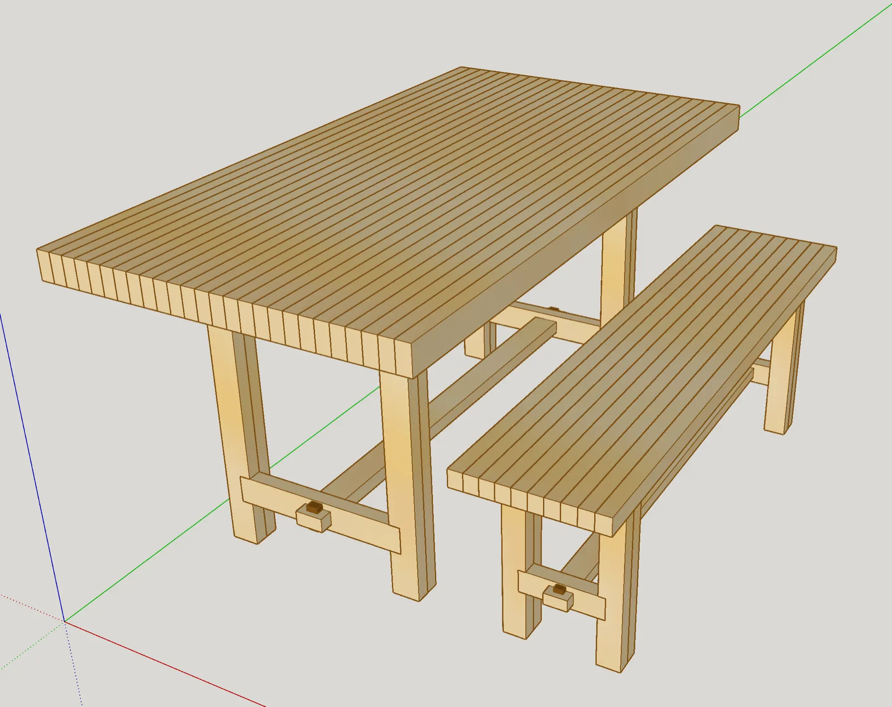
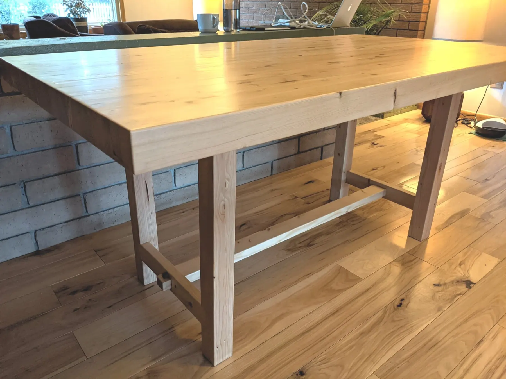
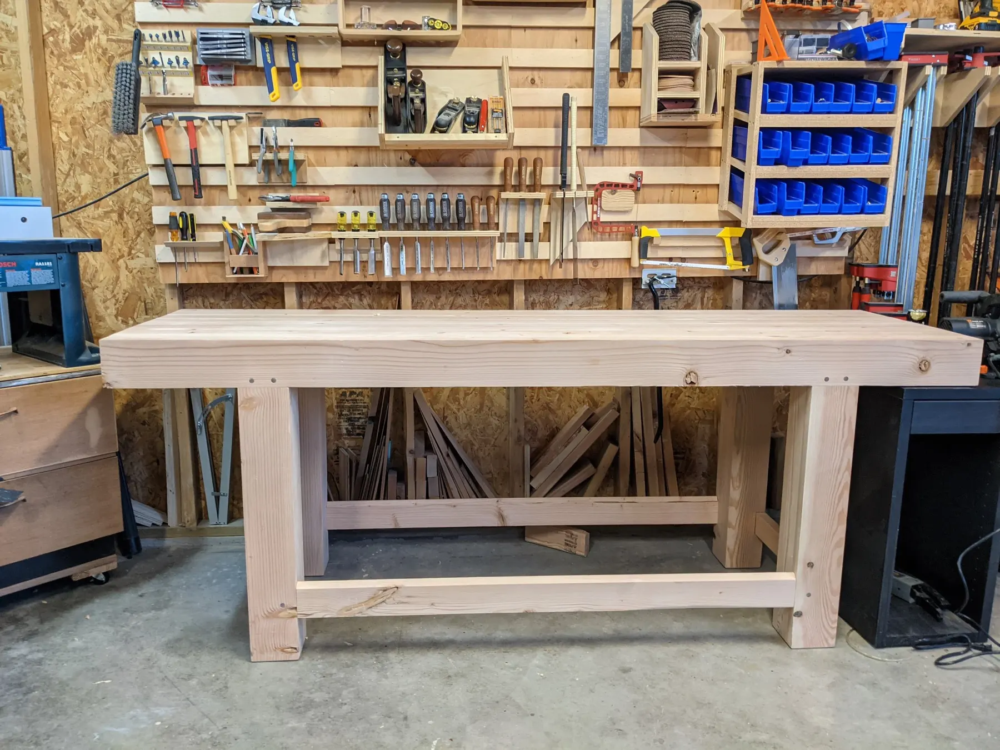
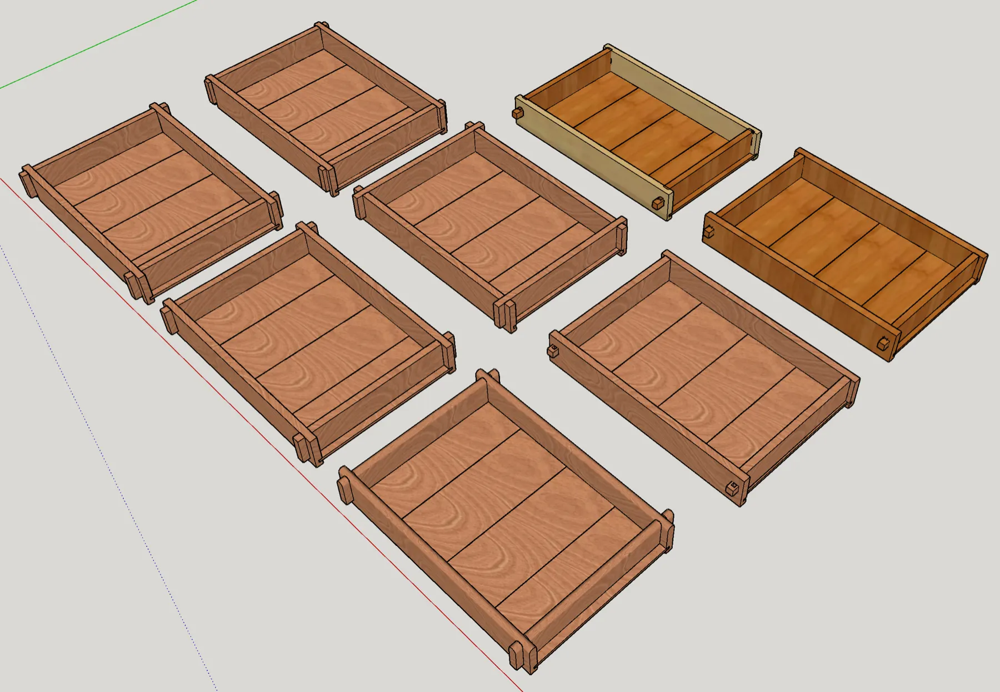
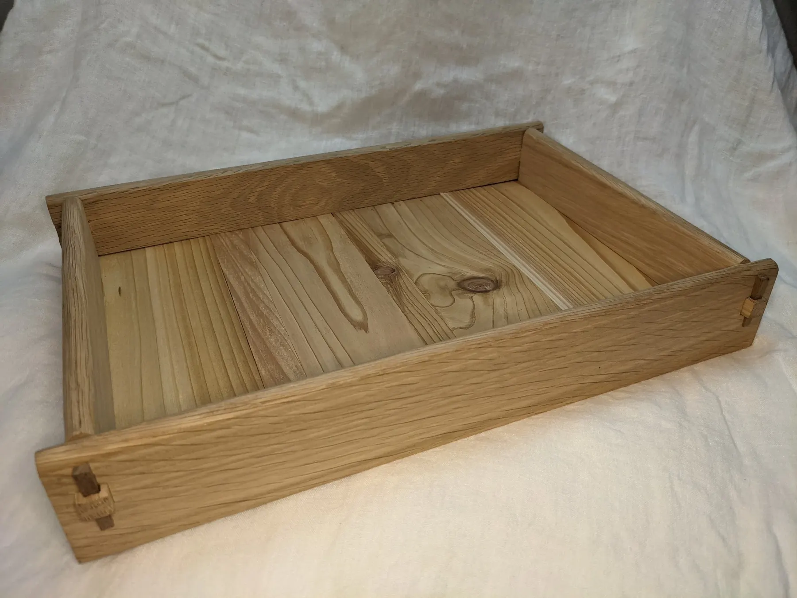
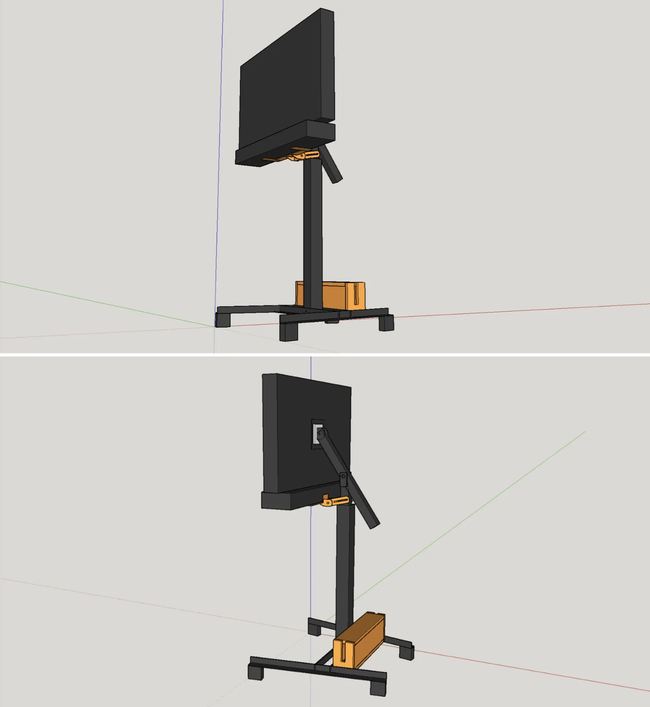
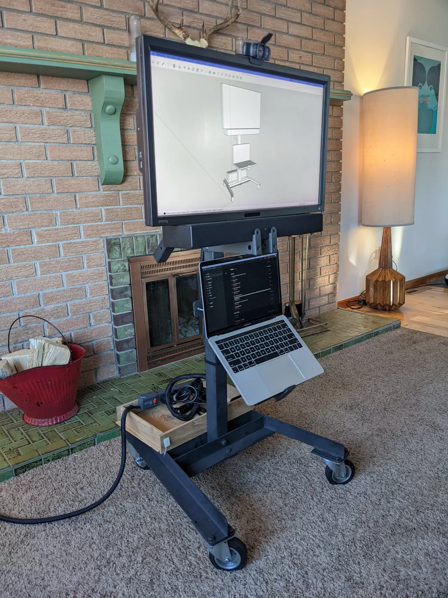
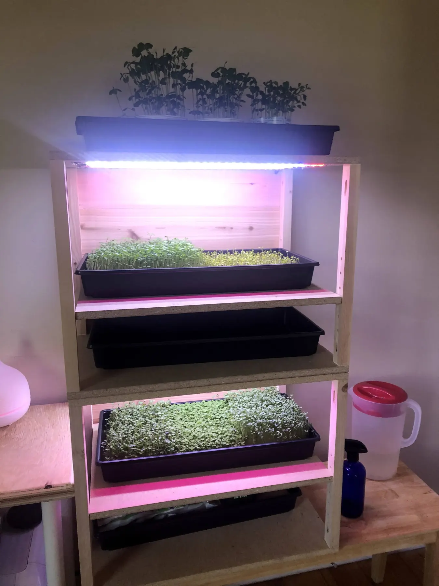
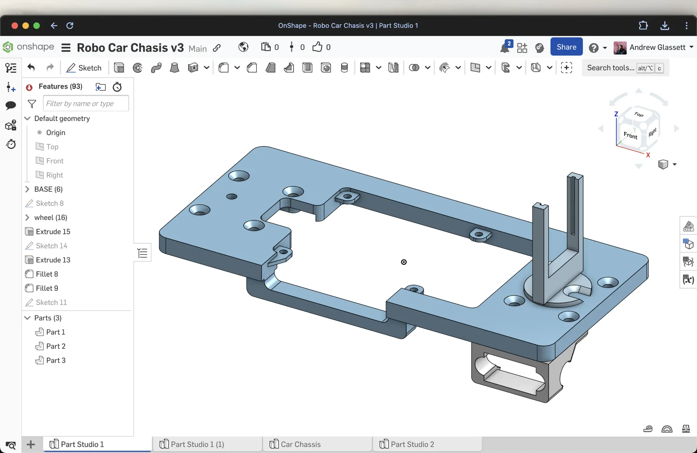
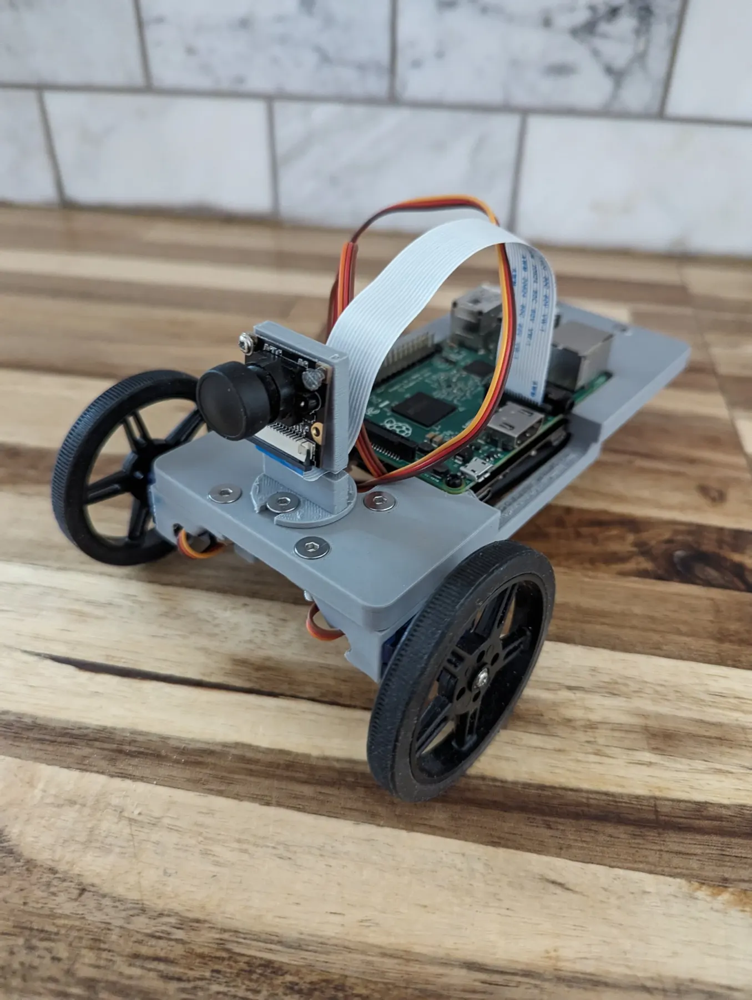